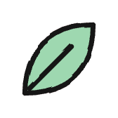
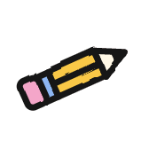
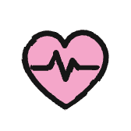
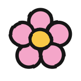
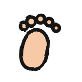
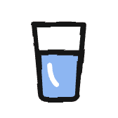
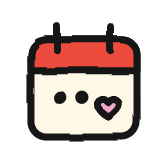
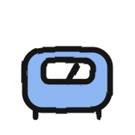
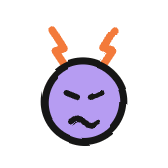
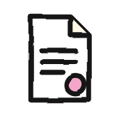

grandma.app · revisão de produto · 2 nov 2026
Mapa das jornadas
O que manter, o que limpar, o que consertar e o que vale criar — jornada por jornada. Regra de ouro: o nosso estilo, nunca overwhelming. Cada tela responde a uma pergunta só: está tudo bem? ou o que eu faço agora?

Calmo
Um número principal por bloco, linhas finas, sem pilha de cards coloridos. Se não ajuda a decidir, sai.

Útil
Cada função nova usa dados que o app já tem e economiza um passo real: consulta, quem cuida, previsão.

Nosso
Stickers, letra à mão, tinta. O carinho aparece em poucos momentos fortes, não em todo canto.
Por jornada
Prints atuais (home → calendário → insights). Veredito abaixo de cada faixa.
Gravidez
Manter
- Card da semana: fruta, medidas, régua
- Dock de logs com stickers
- Timeline do dia na agenda
- Contrações e prontidão para o parto
Revisar
- Quick access abre com 7 tiles → 4 de fábrica (pré-natal, dica da semana, chutes, exames); o resto o usuário liga no ⚙
- Mensagem do dia solta no fim da home → vira parte da carta da avó
- Insights com 7 blocos seguidos → carta da avó; gráficos ficam no detalhe
Cortar
- Seletor de período com 5 opções (Week · Month · 3 mo · Year · Custom) → 3: 7 dias, 30 dias, tudo
- Anel “week over week” repetido no insights (já está no carrossel da home)
Consertar
- “Loading your readiness…” e barra branca no lugar do gráfico enquanto carrega

Ciclo
Manter
- Anel do ciclo com fases
- Faixa da semana colorida por fase
- Calendário do mês com legenda
- Tendência de duração do ciclo
Revisar
- Dois cards de dia empilhados (“A rising day” + “Log for Fri”) → um card do dia só
- Legenda do anel ocupa 2 linhas → chips menores numa linha
- Insights repete números da home (fertilidade, próxima menstruação)
Cortar
- Linha “Cervical mucus —” vazia nos insights quando nunca foi registrado
Consertar
- A home volta mostrando um dia passado selecionado (30/out) quando hoje é 2/nov — deve sempre reabrir em hoje
Kids
Manter
- Chips dos filhos e tiles (sono, humor, calorias, atividades)
- Detalhes calmos por tile
- Vacinas e relatório para o médico
Revisar
- Agenda “Today · 23 pending” mistura 3 filhos → agrupar por filho, mostrar os próximos 3 e “ver todos”
- Quick access 6 → 4 de fábrica (vacinas, saúde, exames, lembretes)
- Insights: nota por pilar em lista longa → carta da avó
Cortar
- Linhas “Tap to see details” sem número nos insights
Consertar
- Tom alarmante: “4.5 · needs care”, “Kenji needs some attention” → linguagem de avó, não de alerta
Menopausa
Manter
- Anel de 28 dias com sintomas
- Contador “meses desde a última menstruação”
- Dock de sintomas e sabedoria da avó
Revisar
- Quick access com só 2 tiles parece vazio → incluir exames e relatório
- Card “Still spotting?” sempre visível → só quando a última menstruação tem menos de 12 meses
Cortar
- Gráfico de severidade de humor quando há só 1–2 registros
Consertar
- Botão preto sólido “Log a period” → pílula pêssego com lápis
- Gráfico “Low mood” mostra zeros gigantes
Insights vira a carta da avó
Ninguém abre o app para ver gráfico. A aba fica, mas mostra o que a avó notou na semana e uma sugestão. Os gráficos continuam um toque abaixo, no detalhe de cada tile — que já existe. O motor de “Grandma noticed” já existe e é baseado em regras: sem custo de IA.
semana 37 · 27 out – 2 nov
Querida Amara,
Foi uma semana boa. Três coisas que eu notei:
Você dormiu melhor
7,5 h por noite, 40 min a mais que na semana passada.

Chutes firmes
10 por sessão, dentro do seu normal.

Água caiu na quinta
5 copos. Nos outros dias, 8.
para esta semana
Deixe a mala da maternidade pronta até sexta.
Abrir checklist
Uma tela, três notas e uma sugestão. Tocar numa nota abre o gráfico daquele tema.
hoje · aba atual
Pregnancy, week over week.
Hoje: anel, peso, 4 pilares, humor, água, movimento, sintomas, parto — tudo em sequência.
Transversais
Momento de salvar
Hoje o pop-up só fecha. Proposta: o sticker volta voando para o dock e ganha o ✓, com uma vibração de sucesso. É o momento de prazer do app, e é o mesmo em todas as jornadas.
1 · toque
Disco afunda, vibração leve
2 · fecha
Pop-up desce, o sticker sobe
3 · pousa
✓ aparece, vibração de sucesso
Carregando e vazio
Nada de “Loading…” cru nem área branca. Carregando = formas do nosso estilo pulsando no lugar do conteúdo. Vazio = sticker, uma frase da avó e um botão.
Carregando: barras fantasmas no formato do gráfico.

Dia tranquilo
Nada registrado ainda. Quer começar pelo humor?
Registrar humor
Vazio: convite para agir, não aviso.
Quick access
Fica. O ⚙ ao lado já deixa o usuário escolher. Mudança: menos atalhos de fábrica, só os que importam em cada jornada.
| Jornada | Atalhos de fábrica (máx. 4) | Disponíveis no ⚙ |
|---|
| Gravidez | Pré-natal · Dica da semana · Contar chutes · Exames | Lembretes, memórias, guia do parto |
| Ciclo | Lembretes · Seus pilares · Exames | Memórias |
| Kids | Vacinas · Saúde · Exames · Lembretes | Metas, saltos de desenvolvimento |
| Menopausa | Lembretes · Exames · Relatório para o médico | Canais |
Funcionalidades novas
Todas usam dados que o app já guarda. Nenhuma pede tela pesada nova.
| Ideia | Por que é útil | Onde entra | Esforço |
|---|
| Relatório para o médico nas 4 jornadas | Kids já gera PDF. Grávida leva peso, sintomas e chutes; menopausa leva sintomas para a conversa de reposição hormonal (HRT); ciclo leva os ciclos. | Detalhe dos insights e quick access | Médio |
| Perguntas para a consulta | Anotar dúvidas durante a semana e chegar na consulta com a lista pronta. | Agenda → consulta | Pequeno |
| Lembrete do ciclo | “Sua menstruação deve vir em 2 dias.” A previsão já existe. | Notificações | Pequeno |
| Gatilhos de fogacho | Marcação opcional (café, álcool, estresse, calor). Depois a avó diz o que mais aparece. | Log de sintoma da menopausa | Pequeno |
| Passagem de turno | Resumo automático para quem cuida: “desde as 14h: mamou 2x, dormiu 1h10”. | Kids → Care Circle | Médio |
relatório para o médico
Leve para a consulta
período
30 dias90 diasTudo
incluir

Peso · 12 registros

Sintomas · 46 registros

Perguntas · 3 anotadas
Mesmo fluxo nas 4 jornadas; muda só a lista do que entra.
agenda · consulta · qui 5 nov
Pré-natal semana 37
Dra. Silva · 10h
minhas perguntas
☐A dor nas costas à noite é normal?
☐Quando ir para a maternidade?
☑Pedir o exame de estreptococo
Anotar pergunta
Perguntas presas à consulta; aparecem de novo no dia, com a lembrança.
Ordem de trabalho
1
Consertos rápidos1 sessão- Botão preto da menopausa
- Zeros no gráfico de humor
- Ciclo reabre em hoje
- Tom “needs care”
- Período com 3 opções
2
Salvar, carregar, vazio1–2 sessões- Momento de salvar no dock
- Formas pulsando ao carregar
- Estados vazios com convite
3
Limpeza por jornada2 sessões- Atalhos de fábrica
- Um card do dia no ciclo
- Agenda de Kids agrupada
4
Carta da avó2–3 sessões- Protótipo na gravidez
- Depois ciclo, kids, menopausa
5
Funções novaspor item- Relatório nas 4 jornadas
- Perguntas para a consulta
- Lembrete do ciclo
- Gatilhos · passagem de turno
Em cada passo: prints antes e depois, modo claro e escuro, e revisão contigo antes de seguir.
Para você decidir
- Insights vira carta da avó (gráficos ficam no detalhe de cada tile)?
- Atalhos de fábrica da tabela acima?
- Seletor de período com 3 opções (7 dias, 30 dias, tudo)?
- Quais funções novas entram primeiro? Minha ordem: relatório → perguntas → lembrete → gatilhos → passagem de turno.
- Comunidade: estado vazio com vida, ou atrás de flag até ter gente?